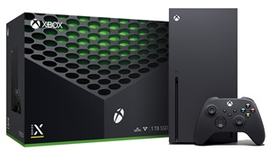

Xbox Series X
Presentamos Xbox Series X, la consola Xbox más rápida y potente de la historia.
Juega miles de títulos de cuatro generaciones de consolas: todos los juegos se ven mejor y se juegan mejor en Xbox Series X. En el corazón
de la Serie X se encuentra la Xbox Velocity Architecture, que combina una unidad SSD personalizada y software integrado para disminuir
significativamente los tiempos de carga dentro y fuera del juego. Simultáneamente muévete sin problemas entre varios juegos en un instante
con Quick Resume. Explora mundos nuevos y disfruta de la acción como nunca con los incomparables 12 teraflops de potencia de
procesamiento de gráficos. Aprovecha al máximo cada minuto de juego con Quick Resume, tiempos de carga ultrarrápidos y una jugabilidad de hasta 120 FPS,todo impulsado por Xbox Velocity Architecture.Los juegos se cargan mucho más rápido con la SSD personalizada y el software integrado. Mientras que la latencia
ultrabaja mejora el tiempo de respuesta de su control a su televisor.